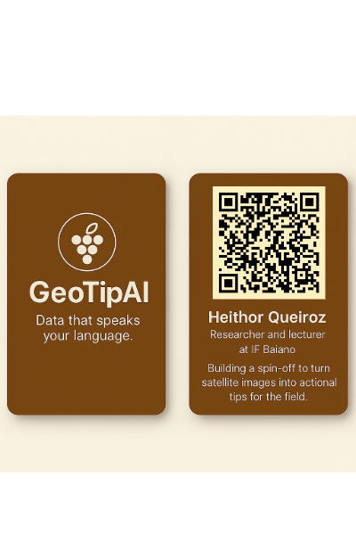

Início
Monitoramento Agrícola Inteligente para Pequenos Produtores.
Recursos
- Imagens de satélite gratuitas (Sentinel-1 e Sentinel-2)
- Predições fenológicas com IA
- Recomendações personalizadas para o campo
Como Funciona
- Carregue sua área de cultivo
- Monitore indicadores como NDVI, chuva e estágio da cultura
- Receba alertas e dicas práticas
Demo
Visualize dados simulados da sua plantação e explore as funcionalidades do sistema.
